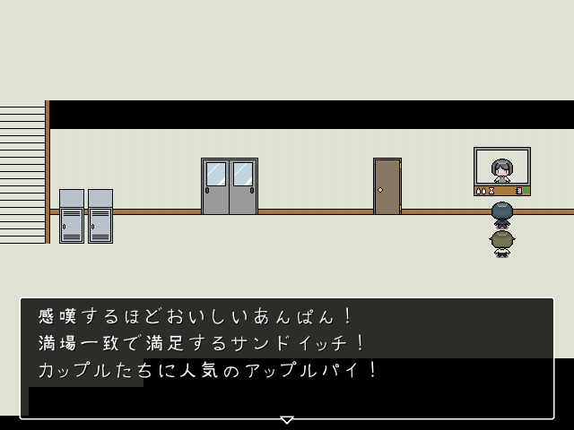

コンテンツ
中途半端なコンテンツどもです
ゲーム
制作途中のフリーゲームです。
ウディタを使用しています
2Dモデル
VTUBE STUDIOを使用しています
えもふりを使用しています#えもふり#E_mote pic.twitter.com/biGCoQwXTL
— 🦡 (@hj_q1g) April 29, 2023
UTAU
oremoを使用してつくりました。YouTubeで視聴できます
中途半端なコンテンツどもです
制作途中のフリーゲームです。
ウディタを使用しています
VTUBE STUDIOを使用しています
えもふりを使用しています#えもふり#E_mote pic.twitter.com/biGCoQwXTL
— 🦡 (@hj_q1g) April 29, 2023
oremoを使用してつくりました。YouTubeで視聴できます